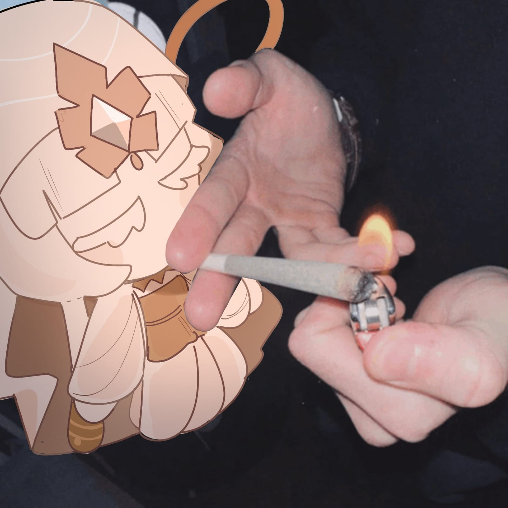

A MFC é uma personagem de Cookie Run: Kingdom, que por mais que pareça um jogo infantil,
aborda varios temas de um jeito bom e que não dá para perceber por causa de como o jogo é e como se pareçe,
e ela é um exemplo disso, onde atualmente ela é uma "vilã" mas no passado foi um cookie que realizava
desejos de outros,
mas por causa da ganancia e corrupção, teve o proprio povo atacando ela, onde ela viu tudo que ela tinha e
todos os servos dela sendo mortos por causa da ganancia, e após adentrar um casulo e meditar por anos,
decidiu que o melhor para todos seria a Apatia,
e esse passado dela me fez amar ela ainda mais, pois já havia amado o design e a voz, e por mais que tenha
sido situações completamente diferentes,
eu ainda me identifiquei com a personagem e cresci um afeto, igual a outra personagem que irei falar nessa
Atividade Avaliativa